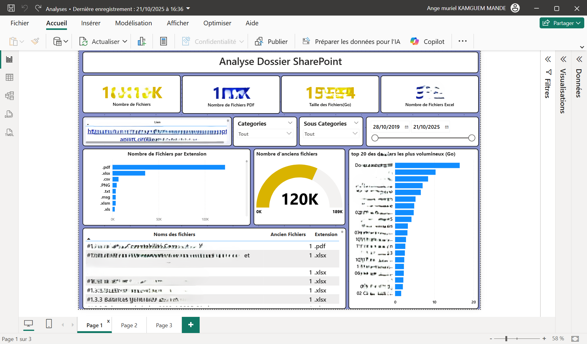
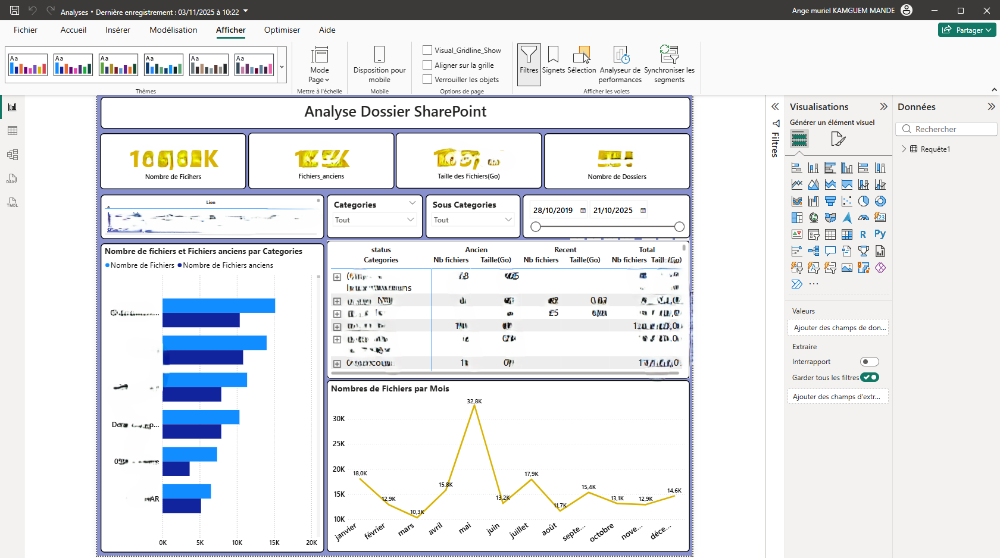

Analyse SharePoint – Volumétrie & Fichiers Anciens

🎯 Objectif :
Analyser la structure d’un dossier SharePoint afin de comprendre la volumétrie globale,
identifier les extensions dominantes, repérer les fichiers anciens
et mettre en évidence les dossiers les plus volumineux.
L’objectif final est d’aider les équipes à optimiser l’espace, supprimer les doublons et
renforcer la gouvernance documentaire.
🚀 Particularité :
Dashboard construit à partir d’un export massif SharePoint (plusieurs dizaines de milliers de fichiers).
Le modèle Power BI inclut :
✔ segmentation par catégories & sous-catégories
✔ détection automatique des fichiers anciens
✔ nettoyage et extraction des chemins complets (Power Query)
✔ analyse temporelle des dépôts
✔ volumétrie en Go par dossier
✔ liste filtrable avançée (nom, extension, taille, ancienneté)
📊 Indicateurs & Insights :
- Nombre total de fichiers
- Nombre de fichiers PDF / Excel / CSV / Images
- Taille totale du dossier (Go)
- Nombre de fichiers anciens (plus de X années)
- Top 20 des dossiers les plus volumineux
- Répartition des fichiers par extension
- Analyse “anciens vs récents”
- Dépôts de fichiers par mois
- Liste complète filtrable
🛠️ Outils & Méthodes :
Power BI (KPIs, design), Power Query (nettoyage & transformation),
DAX (mesures volumétriques, ancienneté), gouvernance documentaire, analyse exploratoire,
storytelling data orienté métier.
🔒 IMPORTANT :
Pour des raisons de confidentialité, le dashboard complet ainsi que les données SharePoint
ne peuvent pas être partagés, car ils contiennent des informations internes sensibles.
📸 Aperçu du Dashboard
